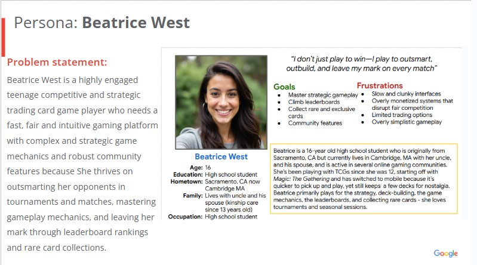
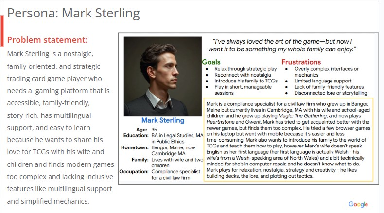
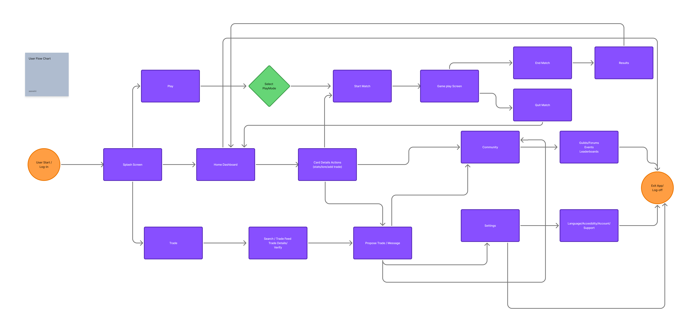
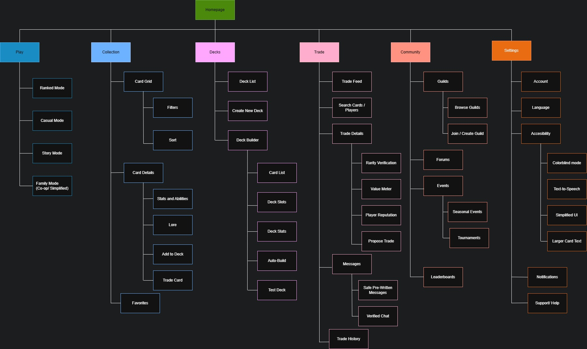
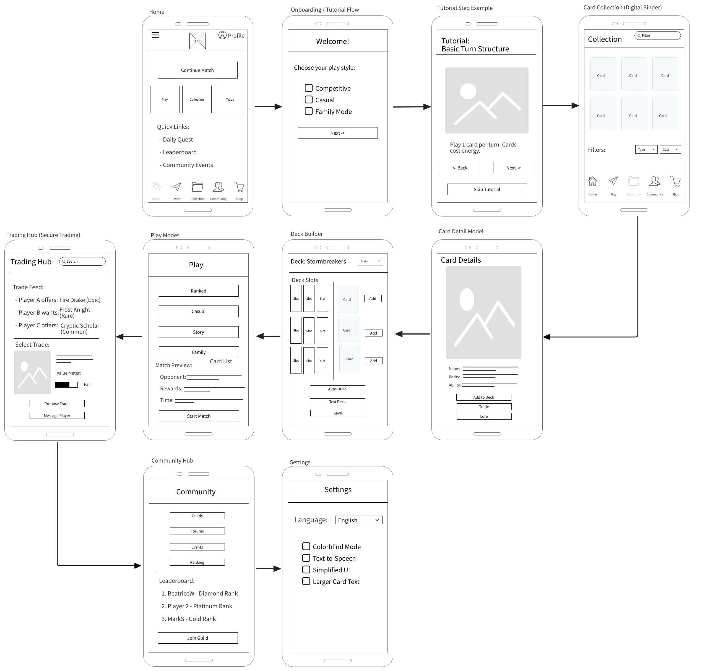

Eternal Sigils is a streamlined mobile TCG experience that balances strategic depth with intuitive onboarding, fair progression, and strong community features.
Many digital trading card games struggle to balance accessibility, strategic depth, and community engagement. Players often face disorganized card decks, unsafe or unreliable trading methods, and limited opportunities for gameplay and community.
The overall goal was to design a mobile TCG experience that supports both competitive mastery and casual enjoyment - while remaining fair, intuitive, and community-driven.
The process for this project consists of the following:
Players expect more from modern digital trading card games than just matches - they want a platform that helps them collect, trade, compete, relax, and connect. To understand how well current TCGs meet these expectations, I examined how players interact with existing digital platforms.
I focused on four key areas:
To represent core audience needs, I created two primary personas.
Beatrice is a competitive, progression-driven player who values rankings, rare cards, and strategic mastery. She wants robust deck-building, fair competition, and a vibrant community.
Mark is a nostalgia-driven, casual player looking for relaxing gameplay and short sessions. He wants to introduce TCGs to his family in a way that is approachable and enjoyable.
These personas guided decisions around complexity, pacing, and accessibility.
Across research, players consistently struggled with:
I analyzed four major digital card game platforms:
Hearthstone showed the importance of pairing visual polish with simple, intuitive navigation to avoid overwhelming players.
Magic: The Gathering Arena demonstrated that deep strategy must be supported by gradual onboarding to prevent cognitive overload.
Marvel Snap highlighted how short, fast-paced matches and friendly onboarding can make mobile play feel instantly rewarding.
Slay the Spire revealed that minimalist visuals can succeed when core mechanics are clear, satisfying, and consistently engaging.
From the audit, I examined several opportunities:
The goal of this project was to design a mobile trading card game experience that is accessible to new and casual players while still supporting strategic mastery, fair progression, and strong community interaction - without relying on pay-to-win mechanics.
Beatrice West:
I want to climb leaderboards
I want to collect and trade rare cards
I'm looking for a strong, vibrant community that I can engage with
I'm trying to master strategic gameplay
Mark Sterling:
I want to relax through strategic play
I'm looking to reconnect with nostalgia
I want to introduce my family to TCGs in short, enjoyable sessions
I mapped user journeys for both personas to identify friction points and opportunities:
Beatrice's journey highlighted the need for competitive clarity and progression transparency.
Mark's journey emphasized quick onboarding, short sessions, and family-friendly interactions.
Both need intuitive navigation and rewarding feedback loops.
These journeys directly shaped the information architecture and user flows.
Based on research insights, I identified opportunities to:
The user flow map focuses on smooth onboarding, clear deck-building paths, intuitive trading interactions, accessible competitive and casual modes, and easy navigation between collection, gameplay, and community.
I designed a clear, scalable sitemap to reduce cognitive load, simplify navigation, and separate competitive, casual, and community experiences.
This structure supports both quick sessions and deeper engagement
I created low-level wireframes using MockFlow, which focused on clarity, speed, and accessibility.
This project focused on designing a mobile trading card game that balances strategic depth with accessibility, addressing common player frustrations such as overwhelming tutorials, unclear progression, and limited community features. Through user research, competitive analysis, and iterative design, I developed a concept that supports both competitive and casual playstyles, offering fair progression, intuitive collection and trading tools, and a community‑driven experience. The resulting structure provides a scalable foundation for future development, including high‑fidelity prototyping, usability testing, and expanded gameplay systems, demonstrating how thoughtful UX design can make a traditionally complex genre welcoming and engaging for a wide range of players.
Key Takeaways:
This project laid the groundwork for a more functional site. The next phase will include: